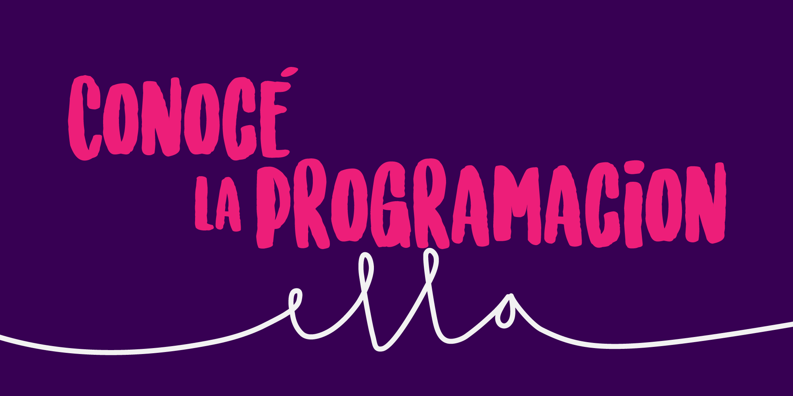
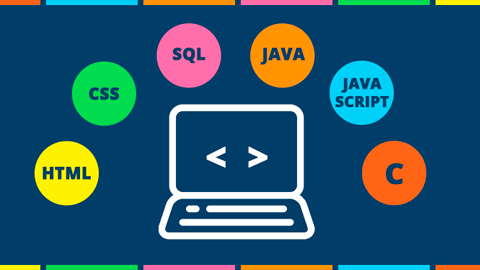

BIENVENIDOS AQUI APRENDERAS A CONECTAR UNA BASE DE DATOS A TU WEB
El curso de diseños de sitios web, la cual aborda la temática relacionada con la configuración de un repositorio GITHUB. Se diseñara una pagina web según el mockup escogido en la etapa pasada, en sabe a esto se deben agregar unas temáticas y cumplir unos requisitos brindados por la guia de actividades.
En los siguientes videos podras aprender como realizar un CRUD
Aqui podras conocer diferentes temas
Curso de bases de datos

Historia de la programación
